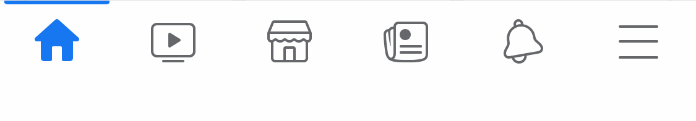

Like is a way to express one's engagement on social media. On instagram, it simply represented as Heart-shaped icons. It has a pop-out interaction on the center of an image when it's touched.
Instagram also uses a verification mark for influencers to avoid fraud issues. Instagram rewards real accounts with the blue badge to ensure authority.
read more...
Youtube utilizes different types of buttons to reward Youtube creators who surpasses a certain number of subscribers. Youtube also send out a flat trophy to reward them. Although they do have Like buttons for each video clip, those rewards do not count them.
read more...

Facebook invented Like button first time ever in web culture. Instead of leaving comments on posts, users can easily react with Likes. They then added more emotions such as Love, Angry, Wow, Sad, and Laugh. Currently they also expanded reactions by adding Care reaction, showing respect and support for users during pandemic.
go back to 1994
